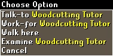
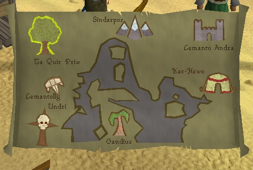
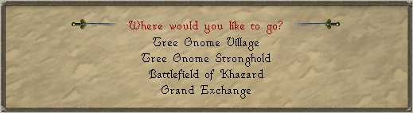
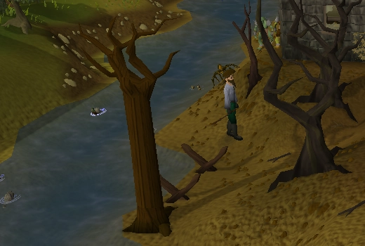
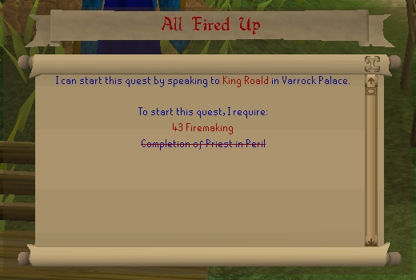
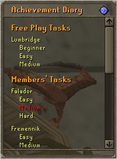
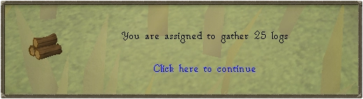
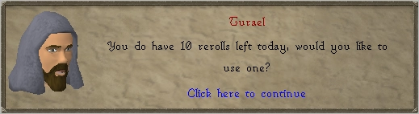

How do I get started?
To get started, all you need to do is:
- Install Java 11 x64 for your operating system. Please ensure you install version 11, other versions will cause obscure problems. Linux users should download Java 11 via their distro's package manager.
- Download Saradomin Launcher:
Windows
Linux
Mac (Legacy launcher only, we need a mac dev to help out with Saradomin for Mac!) - Run the launcher
- If you are using Saradomin, open the settings tab and make sure your java executable location is correct and pointing to your java 11 installation. Tune the settings as you please, but make sure you don't change the server profile. It should be set to stable server.
- Click play! The client will be update/downloaded as necessary.
- Once the client has loaded, create an account from the main menu. If you get stuck on a "please wait" message, restart the client and try again - this happens sometimes if you have a fast connection.
- Log in and play!
Welcome to 2009scape, where your memories of Runescape come to life. Unlike Oldschool Runescape, we keep true to the Gower brothers' vision of the game.
We are a constant work in progress. The goal is content completion up until January 2009 (revision 530), with an expansion to December 2009 (revision 578) planned. We encourage you to discuss any suspected bugs you find on the forum. This project is working towards 100% completion and is currently a work in progress, you can read more on our about page. Whilst we strive for authenticity, we have made a few quality-of-life (QoL) improvements along the way. We do not accept donations, or any form of financial contribution. If you wish to contribute you can help maintain the wiki, become a tester, fix issues, write new content or help us maintain our drop tables, item config, etc.
2009scape consists of three main components:
- Server - where the game runs, hosted by volunteers
- Client - where the game is displayed and interacted with
- Launcher - updates, configures and runs the game client
You may request your live server save file at any time.
If you have any questions that are not answered here please ask on the forums.
As of April 2022, the famous tutorial island has been added to 2009scape. Once you have created your account, you will spawn at the start of tutorial island. You can skip the tutorial by talking to Skippie. I know many of you have completed tutorial island so many times that you can't fathom the thought of doing it again. But, I promise that you will not regret experiencing the island with those beautiful HD graphics! Do keep in mind that the default experience is x5, so if you're a skiller you will want to skip the tutorial.
You will be given the option to set your XP rate and game mode at the end of the tutorial by speaking to the wizard.
Changing xp rates
- 1x Rate (authentic)
- 2.5x Rate
- 5x Rate (the default)
- 10x Rate (exclusively for permadeath ironmen)
Changing Ironman Modes
As some of us have not played in over a decade. I will go into detail on each mode.
- Ironman Mode
- Hardcore/Permadeath Ironman
- Ultimate Ironman
This account mode is the basic of the three account types. Ironmen are unable to trade any other player so they are completely self-sufficient. They also can not use lootshare whatsoever which means they are still stuck collecting everything on their own.
Follows the restrictions of regular ironman mode, but the account will be reset upon death.
Like regular ironman mode, the only other difference is ultimate ironmen can not bank items. They can, however, note and unnote items by using them on bank booths.
Bronze Axe - The bronze axe can be found in the chicken coup across the bridge of Lumbridge across from the cows. It is sticking in a tree stump for you to grab.
Bronze Pickaxe - The bronze pickaxe can be found by going up the ladder in the gate house in Lumbridge castle. It is located on the third floor.
Tinderbox - The tinderbox can be found in the Draynor Manor on the third floor near the professor you speak to during the Ernest the chicken quest. ( can also be bought from the general store for a few coins )
Fish Net - The fish net can be found near the fishing tutor in Lumbridge swamp all over the ground.
Knife - A knife can be found on top of the crate in the Lumbridge Castle kitchen basement or behind Bob's Axe Shop.
Iron Dagger - While the bronze dagger is usually the staple of the tutorial island weapons, an iron one is even better. You can find an iron dagger in the Goblin house across the bridge in Lumbridge.
In Runescape there were plenty of different ways to make money and I know it's a tad difficult hopping into the time machine and coming back to this era forgetting how in the worlds people made money.
Not to worry we have you covered with some basic money making methods that may later have full guides but for now a little glimpse into what 2009scape has to offer.
Tip: The Bandit Camp's General store buys items for high alch value if you are unable to find players to trade or do not have the magic level
- How do I get started?
- About Page
- Controls
- Credit System
- The Commands
- Skill Cape Perks
Jobs
In the year of 2009, Runescape had a job system to help newer players get used to the skill system. You came right out the tutorial Learning the ropes, just to realize that you had 25gp to your name with just a few starter tools to get you started. Most of the tutors inside of Lumbridge are trying to get you to work for them but I know right away that can be intimidating. If I were you, I would head straight to the woodcutting tutors and get your first job. While you are level one woodcutting you will most likely have to cut around 20 regular logs and give you around 5-6k.
Pyramid Plunder
This sneaky thieving mini game can end up getting you a pretty penny when first starting. As it only requires 30 thieving to get started! There are plenty of rewards to get form the mini game one being pharaoh's sceptre.
| Type |
Material |
Gold |
| Comb | Ivory | 50gp |
| Comb | Pottery | N/A |
| Comb | Stone | N/A |
| Comb | Gold | N/A |
| Seal | Ivory | N/A |
| Seal | Pottery | N/A |
| Seal | Stone | 150gp |
| Seal | Gold | 750gp |
| Scarab | Ivory | N/A |
| Scarab | Pottery | 75gp |
| Scarab | Stone | 175gp |
| Scarab | Gold | 1k |
| Statuette | Ivory | N/A |
| Statuette | Pottery | 100gp |
| Statuette | Stone | 200gp |
| Statuette | Gold | 1,250gp |
Agility Pyramid
You will need a way to make sure you don't die of the desert heat and a minimum of 30 agility to get started.
The pyramid is straight-forward and when you bring Simon the pyramid top he will give you 10k each.
Make sure you bring waterskins
Stronghold of Security
Make your way over to the stronghold of security underneath the Barbarian village. Make your way through the mazes answering the player safety questions. Once you have made it through the maze there is a free 10k and some colorful/fighting boots.
Gnome Gliders
One of the biggest obstacles of Runescape in 2009, was attempting to go over the white wolf mountain or you could walk all the way to edgeville pull the wilderness lever, pull it again and end up in Ardy. Tree gnome stronghold is not implemented in the game yet so we consider the glider free game for those who want to use it. You have several locations you can teleport to right away.

Spirit Trees
Just like the Gnome Gliders, you may travel from any spirit tree directly to any other Spirit Tree in the game, but first, you must complete the Tree Gnome Village Quest to gain access.

Canoes
The travel method a lot of people forget about are the canoes!

Fairy Rings
I won't be going into super detail of where the fairy rings teleport you to, but I will say that in 2009scape due to Fairy tale quest not being added, the fairy rings are locked behind only the lost city quest.
Quests

One major thing that most people on the server forget when starting the server is that quests exist in the game. While most rsps do not really have quests this is a remake of the year 2009 so the plan is to add all the quests eventually in the game. As pointed out earlier on this page is that when a quest is not implemented you can use some of the travel methods without needing to complete the quest. You can find all the quests inside the website under quest help. The quest cape works as well. Once a new quest is added you will no longer be able to wear the cape until that quest is completed.
Diaries

Recently we had an update that added the Diaries to the game! There is now certain content locked behind these achievements. With methods of fast traveling completing the Lumbridge/Draynor diaries can land you an explorer ring which teleports you to the farming patches! There are plenty of other perks of completing the diaries! So click the little green star in your quests tab to check them out!
Dailies

With a new system for Dailies being added the dailyscape grind has come to 09. Do not worry, this will not consume your entire gameplay experience since there is plenty of stuff to do inside of the game. Just to name a few dailies there are shooting stars, penguin hide n seek, and things like battlestaves being in stock. There will be guides soon on our local Wiki.
Slayer Rerolls

Being a Community we are always voting in Quality of life updates that help players releive a partial bit of the tedious unnecessary grind of their game play experience. In 2009scape, we have allowed as long as you are within the dialogue to reroll the slayer task. If you click out the game has noted that you had accepted the slayer task.
Let us know on the forums if you have any suggestions for this guide and make sure you check out our wiki for quest guides and more.
More articles in
Game Guide
|
|